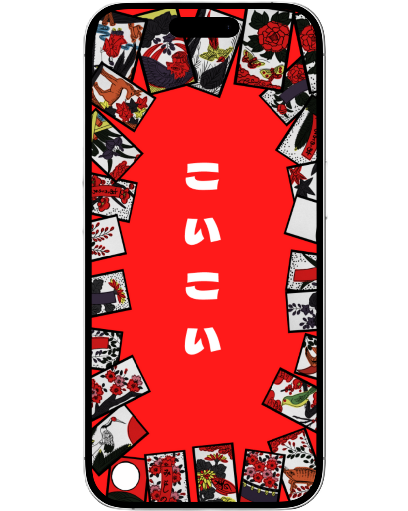
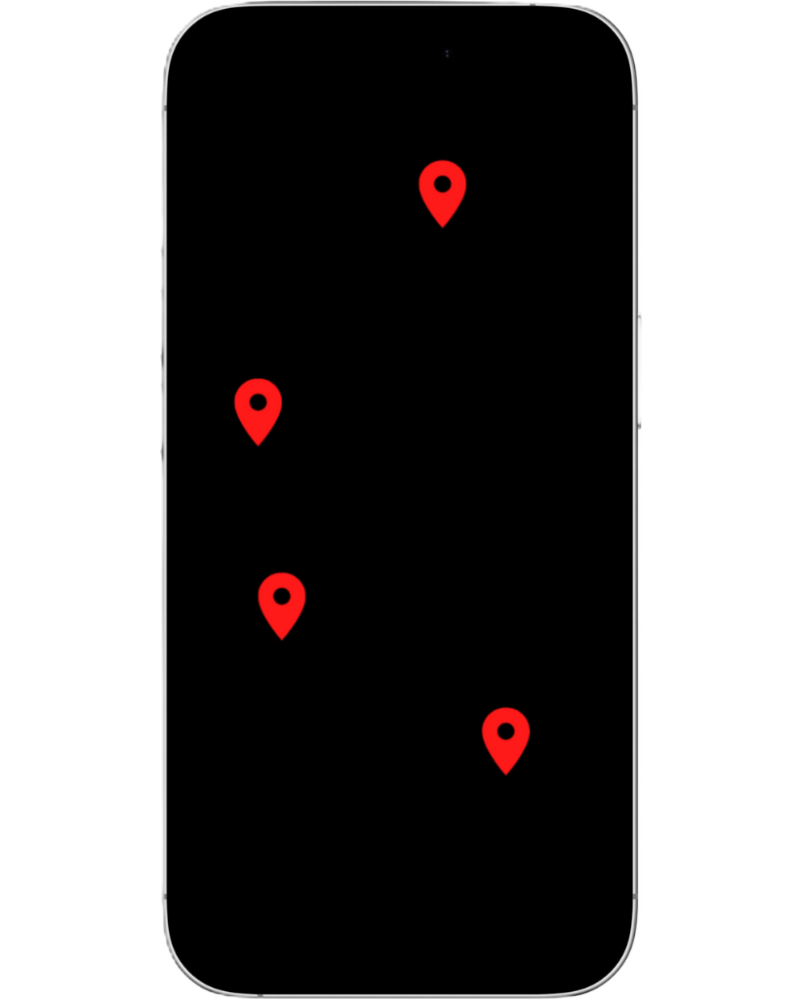
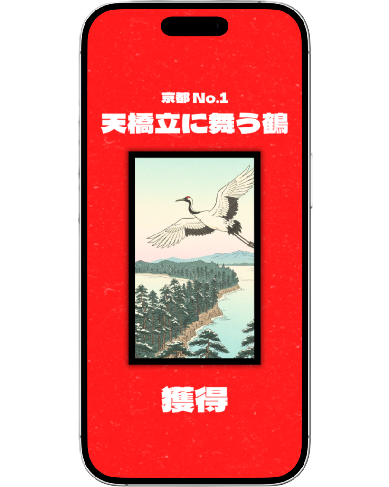

まずは旅の記録帖となる「公式アプリ」を導入しましょう。
狙いの札を確認し、最初に向かうエリア（県・府）を定めます。

拠点の案内所を訪ね、札の在り処が記された専用マップを入手しましょう。
アプリにマップを読み込み、いざ出発。歩いた軌跡がそのまま地図になっていく様子を楽しみながら進みます。

目的地でQRコードをスキャンして札を獲得。案内所に報告することで、実物の札も授与されます。
「月揃え」や「役」が揃ったらアプリで報告を。その功績に応じて、豪華な特典を進呈いたします。